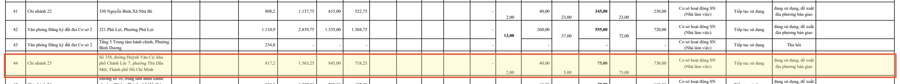
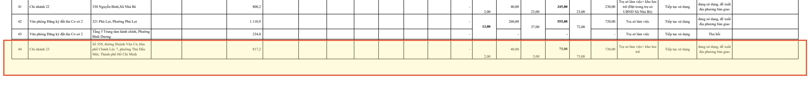
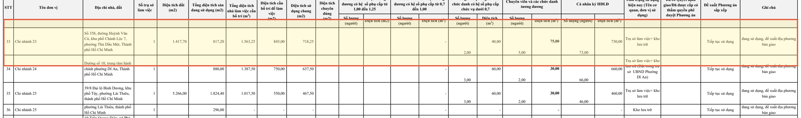

• Sử dụng chung: 718,25 m²
Tiêu Đề & Nội Dung Chi Nhánh 23 Tại 3 Phụ Lục (Kèm Ảnh Minh Chứng Gốc)
Trích xuất trực tiếp nguyên văn tiêu đề phụ lục, dòng dữ liệu số liệu và ảnh chụp phóng to từ văn bản gốc
TIÊU ĐỀ: DANH SÁCH TRỤ SỞ CÁC CƠ QUAN, ĐƠN VỊ TRỰC THUỘC SỞ NÔNG NGHIỆP VÀ MÔI TRƯỜNG
Bảng tổng hợp hiện trạng toàn diện tất cả 271 cơ sở nhà đất của toàn Sở NN&MT TP.HCM
| STT | Tên Đơn Vị | Địa Chỉ Nhà Đất | Sàn Hiện SD | Định Mức Sàn | Định Mức Nhân Sự (NĐ 155) | Tình Trạng Sử Dụng | Phương Án Đề Xuất |
|---|---|---|---|---|---|---|---|
| 44 | Chi nhánh 23 | Số 358, đường Huỳnh Văn Cù, khu phố Chánh Lộc 7, phường Thủ Dầu Một, Thành phố Hồ Chí Minh | 817,2 m² | 1.563,25 m² |
• 2 PGĐ (40,00 m²) • 5 cấp tổ (75,00 m²) • 73 chuyên viên (730,00 m²) |
Cơ sở hoạt động SN (Nhà làm việc) |
Tiếp tục sử dụng Đang sử dụng, đề xuất ĐP bàn giao |

TIÊU ĐỀ: DANH SÁCH TRỤ SỞ CÁC CƠ QUAN, TỔ CHỨC, ĐƠN VỊ ĐỀ XUẤT TIẾP TỤC SỬ DỤNG
Danh mục chọn lọc 222 cơ sở giữ lại phục vụ hoạt động chuyên môn (đã loại bỏ các cơ sở thu hồi, điều chuyển)
| STT | Tên Đơn Vị | Địa Chỉ Nhà Đất | Sàn Hiện SD | Định Mức Nhân Sự (NĐ 155) | Tình Trạng Sử Dụng | Phương Án Đề Xuất |
|---|---|---|---|---|---|---|
| 44 | Chi nhánh 23 | Số 358, đường Huỳnh Văn Cù, khu phố Chánh Lộc 7, phường Thủ Dầu Một, Thành phố Hồ Chí Minh | 817,2 m² |
• 2 PGĐ (40,00 m²) • 5 cấp tổ (75,00 m²) • 73 chuyên viên (730,00 m²) |
Trụ sở làm việc+ kho lưu trữ |
Tiếp tục sử dụng Đang sử dụng, đề xuất ĐP bàn giao |

TIÊU ĐỀ: DANH SÁCH TRỤ SỞ CÁC CƠ QUAN, TỔ CHỨC, ĐƠN VỊ ĐỀ NGHỊ GIAO QUẢN LÝ SỬ DỤNG CHÍNH THỨC
Phụ lục duy nhất ghi nhận đầy đủ diện tích đất khuôn viên chuẩn xác: 1.417,70 m²
| STT | Tên Đơn Vị | Địa Chỉ Nhà Đất | Số Trụ Sở | Diện Tích Đất | Sàn Hiện SD | Định Mức Sàn | Tình Trạng & Đề Xuất |
|---|---|---|---|---|---|---|---|
| 33 | Chi nhánh 23 | Số 358, đường Huỳnh Văn Cù, khu phố Chánh Lộc 7, phường Thủ Dầu Một, Thành phố Hồ Chí Minh | 1 | 1.417,70 m² | 817,20 m² | 1.563,25 m² |
Trụ sở làm việc+ kho lưu trữ
Tiếp tục SD, đề xuất ĐP bàn giao
|

Bảng Bóc Tách Đầy Đủ 24 Cột Dữ Liệu Chi Nhánh 23 (Theo NĐ 155/2025/NĐ-CP)
Dữ liệu quy chuẩn theo biểu mẫu kê khai nhà đất của Bộ Tài chính và Chính phủ
Giải Thích Kỹ Thuật: Vì Sao Dò Bằng Mắt Thường Trên File PDF Rất Khó Thấy?
Tương Quan Giữa Hiện Trạng & Định Mức Chuẩn
Trụ sở hiện hữu tại 358 Huỳnh Văn Cù đang ở trạng thái tải trọng cao khi phải bố trí không gian làm việc cho 80 người và lưu trữ khối lượng khổng lồ hồ sơ địa chính của 5 phường thuộc địa bàn Chi nhánh 23.
Ý Nghĩa Pháp Lý Bàn Giao Trụ Sở (Phụ Lục 5)
Quy mô 80 nhân sự trong phương án giải thích chuẩn xác số lượng thiết bị máy tính (~80 bộ PC) được bàn giao trong các văn bản IT của Chi nhánh.